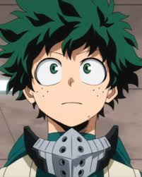

Sinopse:
Em um mundo onde 80% da população possui algum
poder sobre-humano, ou "dons", conhecidos como individualidades,
o garoto Midoriya Izuku teve a infelicidade de nascer sem nenhum.
Nesse mundo fictício, desde o primeiro caso constatado de um recém
nascido com algum tipo de poder, o índice de criminalidade cresceu
proporcional ao surgimento de heróis com as mais variadas capacidades.
E, como não poderia deixar de ser, o sonho de Izuku é se tornar um
super-herói. Isso parecia impossível até o dia que ele ajuda o poderoso
All-Might na captura de um vilão gosmento. All-Might, vendo que Izuku tem
a atitude e o coração de um verdadeiro herói, mesmo sem possuir qualquer poder,
resolve passá-lo seus poderes, a fim de torná-lo seu sucessor como o símbolo da paz.
E assim Izuku vai à uma escola para heróis em formação.
Autor: Kōhei Horikoshi
Editor: Viz
Data de publicação: 7 de julho de 2014 – presente
Adaptações: Minha Academia de Heróis: Dois Heróis (2018), My Hero Academia: Heroes: Rising (2019), My Hero Academia
Gêneros: Ficção de aventura, Fantasia, História de super-herói
| Temporada | Episódios |
| Temporada 1 | |
| Temporada 2 | |
| Temporada 3 | |
| Temporada 4 |
